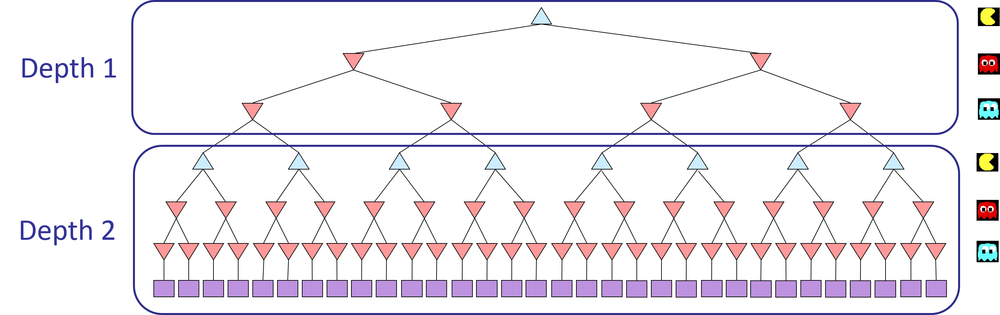

Lab3 - Agentes Multi-Agente
Fecha de entrega: Domingo, 29 de marzo, 11:55 PM PT

Pacman, ahora con fantasmas. Minimax, Expectimax, Evaluación
Tabla de Contenidos
Archivos necesarios
En este laboratorio, deben descargar los archivos base desde este
link.Introducción
En este proyecto, diseñarán agentes para la versión clásica de Pacman, incluyendo fantasmas. En el camino, implementarán búsqueda minimax y expectimax e intentarán diseñar funciones de evaluación.
La base de código no ha cambiado mucho del proyecto anterior, pero por favor comiencen con una instalación nueva, en lugar de mezclar archivos del proyecto 1.
Como en Lab1 y Lab2, este Laboratorio incluye un autograder para que califiquen sus respuestas en su máquina. Esto se puede ejecutar en todas las preguntas con el comando:
python autograder.py
Se puede ejecutar para una pregunta particular, como q2, con:
python autograder.py -q q2
Se puede ejecutar para una prueba particular con comandos de la forma:
python autograder.py -t test_cases/q2/0-small-tree
Por defecto, el autograder muestra gráficos con la opción
-t, pero no con la opción
-q. Pueden forzar los gráficos usando la bandera
--graphics, o forzar sin gráficos usando la bandera
--no-graphics.
Vea el tutorial del autograder en el Proyecto 0 para más información sobre el uso del autograder.
Exploración de archivos
El código de este proyecto consiste en varios archivos de Python, algunos de los cuales deberán leer y entender para completar la tarea, y algunos de los cuales pueden ignorar.
Archivos que van a editar
| Archivo | Descripción |
|---|---|
| multiAgents.py | Donde residirán todos sus agentes de búsqueda multi-agente. |
Archivos que quizás quieran revisar
| Archivo | Descripción |
|---|---|
| pacman.py | El archivo principal que ejecuta juegos de Pacman. Este archivo también describe un tipo Pacman GameState, que usarán extensivamente en este proyecto. |
| game.py | La lógica detrás de cómo funciona el mundo de Pacman. Este archivo describe varios tipos de soporte como AgentState, Agent, Direction y Grid. |
| util.py | Estructuras de datos útiles para implementar algoritmos de búsqueda. No necesitan usar estas para este proyecto, pero pueden encontrar útiles otras funciones definidas aquí. |
Archivos de soporte que pueden ignorar
| Archivo | Descripción |
|---|---|
| graphicsDisplay.py | Gráficos para Pacman |
| graphicsUtils.py | Soporte para gráficos de Pacman |
| textDisplay.py | Gráficos ASCII para Pacman |
| ghostAgents.py | Agentes para controlar fantasmas |
| keyboardAgents.py | Interfaces de teclado para controlar Pacman |
| layout.py | Código para leer archivos de diseño y almacenar sus contenidos |
| autograder.py | Autograder del proyecto |
| testParser.py | Analiza archivos de prueba y solución del autograder |
| testClasses.py | Clases de prueba generales de autograding |
| test_cases/ | Directorio que contiene los casos de prueba para cada pregunta |
| multiagentTestClasses.py | Clases de prueba de autograding específicas del Proyecto 3 |
Pacman Multi-Agente
Primero, jueguen un juego de Pacman clásico ejecutando el siguiente comando:
python pacman.py
y usen las teclas de flecha para moverse. Ahora, ejecuten el ReflexAgent proporcionado en multiAgents.py:
python pacman.py -p ReflexAgent
Noten que juega bastante mal incluso en diseños simples:
python pacman.py -p ReflexAgent -l testClassic
Inspeccionen su código (en
multiAgents.py) y asegúrense de entender qué está haciendo.
Q1: Agente Reflejo
Mejoren el
ReflexAgent
en
multiAgents.py
para jugar respetablemente. El código del agente reflejo proporcionado ofrece algunos ejemplos útiles de métodos que consultan el GameState para obtener información. Un agente reflejo capaz tendrá que considerar tanto las ubicaciones de comida como las ubicaciones de fantasmas para desempeñarse bien. Su agente debería limpiar fácil y confiablemente el diseño testClassic:
python pacman.py -p ReflexAgent -l testClassic
Prueben su agente reflejo en el diseño mediumClassic predeterminado con uno o dos fantasmas (y animación desactivada para acelerar la visualización):
python pacman.py --frameTime 0 -p ReflexAgent -k 1
python pacman.py --frameTime 0 -p ReflexAgent -k 2
¿Cómo le va a su agente? Probablemente morirá a menudo con 2 fantasmas en el tablero predeterminado, a menos que su función de evaluación sea bastante buena.
Opciones: Los fantasmas predeterminados son aleatorios; también pueden jugar por diversión con fantasmas direccionales ligeramente más inteligentes usando -g DirectionalGhost. Si la aleatoriedad les impide determinar si su agente está mejorando, pueden usar -f para ejecutar con una semilla aleatoria fija (mismas elecciones aleatorias en cada juego). También pueden jugar múltiples juegos seguidos con -n. Desactiven los gráficos con -q para ejecutar muchos juegos rápidamente.
Calificación: Ejecutaremos su agente en el diseño openClassic 10 veces. Recibirán 0 puntos si su agente agota el tiempo o nunca gana. Recibirán 1 punto si su agente gana al menos 5 veces, o 2 puntos si su agente gana los 10 juegos. Recibirán un punto adicional si el puntaje promedio de su agente es mayor a 500, o 2 puntos si es mayor a 1000. Pueden probar su agente bajo estas condiciones con:
python autograder.py -q q1
Para ejecutarlo sin gráficos, use:
python autograder.py -q q1 --no-graphics
Q2: Minimax
Ahora escribirán un agente de búsqueda adversarial en el stub de clase
MinimaxAgent
proporcionado en
multiAgents.py. Su agente minimax debería funcionar con cualquier número de fantasmas, por lo que tendrán que escribir un algoritmo que sea ligeramente más general de lo que han visto previamente en clase. En particular, su árbol minimax tendrá múltiples capas min (una para cada fantasma) por cada capa max.
Su código también debería expandir el árbol de juego a una profundidad arbitraria. Puntúen las hojas de su árbol minimax con el
self.evaluationFunction, que por defecto es
scoreEvaluationFunction. MinimaxAgent extiende MultiAgentSearchAgent, que da acceso a self.depth y self.evaluationFunction. Asegúrense de que su código minimax haga referencia a estas dos variables donde sea apropiado ya que estas variables se llenan en respuesta a opciones de línea de comandos. (No codifiquen llamadas a scoreEvaluationFunction ya que escribiremos una mejor función de evaluación más adelante en el proyecto.)

Calificación: Verificaremos su código para determinar si explora el número correcto de estados de juego. Esta es la única forma confiable de detectar algunos errores muy sutiles en implementaciones de minimax. Como resultado, el autograder será muy exigente sobre cuántas veces llaman a GameState.generateSuccessor. Si lo llaman más o menos de lo necesario, el autograder se quejará. Para probar y depurar su código, ejecuten:
python autograder.py -q q2
Esto mostrará lo que hace su algoritmo en varios árboles pequeños, así como en un juego de pacman. Para ejecutarlo sin gráficos, use:
python autograder.py -q q2 --no-graphics
Pistas y Observaciones
- Implementen el algoritmo recursivamente usando función(es) auxiliar(es).
- La implementación correcta de minimax llevará a que Pacman pierda el juego en algunas pruebas. Esto no es un problema: como es el comportamiento correcto, pasará las pruebas.
- La función de evaluación para la prueba de Pacman en esta parte ya está escrita (self.evaluationFunction). No deben cambiar esta función, pero reconozcan que ahora estamos evaluando estados en lugar de acciones, como lo hacíamos para el agente reflejo. Los agentes que miran hacia adelante evalúan estados futuros mientras que los agentes reflejo evalúan acciones desde el estado actual.
-
Los valores minimax del estado inicial en el diseño minimaxClassic son 9, 8, 7, -492 para profundidades 1, 2, 3 y 4 respectivamente. Noten que su agente minimax a menudo ganará (665/1000 juegos para nosotros) a pesar de la terrible predicción de minimax de profundidad 4.
Terminal
python pacman.py -p MinimaxAgent -l minimaxClassic -a depth=4 - Pacman siempre es el agente 0, y los agentes se mueven en orden de índice de agente creciente.
- Todos los estados en minimax deben ser GameStates, ya sea pasados a getAction o generados a través de GameState.generateSuccessor. En este proyecto, no estarán abstrayendo a estados simplificados.
- En tableros más grandes como openClassic y mediumClassic (el predeterminado), encontrarán que Pacman es bueno para no morir, pero bastante malo para ganar. A menudo se agitará sin hacer progreso. Podría incluso agitarse justo al lado de un punto sin comerlo porque no sabe a dónde iría después de comer ese punto. No se preocupen si ven este comportamiento, la pregunta 5 limpiará todos estos problemas.
-
Cuando Pacman cree que su muerte es inevitable, intentará terminar el juego lo más pronto posible debido a la penalización constante por vivir. A veces, esto es lo incorrecto con fantasmas aleatorios, pero los agentes minimax siempre asumen lo peor:
Terminal
python pacman.py -p MinimaxAgent -l trappedClassic -a depth=3Asegúrense de entender por qué Pacman se apresura hacia el fantasma más cercano en este caso.
Q3: Poda Alpha-Beta
Hagan un nuevo agente que use poda alpha-beta para explorar más eficientemente el árbol minimax, en
AlphaBetaAgent. De nuevo, su algoritmo será ligeramente más general que el pseudocódigo de la clase, por lo que parte del desafío es extender la lógica de poda alpha-beta apropiadamente a múltiples agentes minimizadores.
Deberían ver una aceleración (quizás la profundidad 3 alpha-beta se ejecutará tan rápido como la profundidad 2 minimax). Idealmente, la profundidad 3 en smallClassic debería ejecutarse en solo unos segundos por movimiento o más rápido.
python pacman.py -p AlphaBetaAgent -a depth=3 -l smallClassic
Los valores minimax de AlphaBetaAgent deberían ser idénticos a los valores minimax de MinimaxAgent, aunque las acciones que selecciona pueden variar debido a diferentes comportamientos de desempate. De nuevo, los valores minimax del estado inicial en el diseño minimaxClassic son 9, 8, 7 y -492 para profundidades 1, 2, 3 y 4 respectivamente.
Calificación: Debido a que verificamos su código para determinar si explora el número correcto de estados, es importante que realicen la poda alpha-beta sin reordenar hijos. En otras palabras, los estados sucesores siempre deben procesarse en el orden devuelto por GameState.getLegalActions. De nuevo, no llamen a GameState.generateSuccessor más de lo necesario.
No deben podar en igualdad para coincidir con el conjunto de estados explorados por nuestro autograder. (De hecho, alternativamente, pero incompatible con nuestro autograder, sería permitir también la poda en igualdad e invocar alpha-beta una vez en cada hijo del nodo raíz, pero esto no coincidirá con el autograder.)
El pseudocódigo a continuación representa el algoritmo que deben implementar para esta pregunta.

Para probar y depurar su código, ejecuten:
python autograder.py -q q3
Esto mostrará lo que hace su algoritmo en varios árboles pequeños, así como en un juego de pacman. Para ejecutarlo sin gráficos, use:
python autograder.py -q q3 --no-graphics
La implementación correcta de poda alpha-beta llevará a que Pacman pierda algunas de las pruebas. Esto no es un problema: como es el comportamiento correcto, pasará las pruebas.
Q4: Expectimax
Minimax y alpha-beta son excelentes, pero ambos asumen que están jugando contra un adversario que toma decisiones óptimas. Como cualquiera que alguna vez haya ganado al tres en raya puede decirles, este no siempre es el caso. En esta pregunta implementarán el ExpectimaxAgent, que es útil para modelar el comportamiento probabilístico de agentes que pueden tomar decisiones subóptimas.
Como con los problemas de búsqueda aún por cubrir en esta clase, la belleza de estos algoritmos es su aplicabilidad general. Para acelerar su propio desarrollo, hemos proporcionado algunos casos de prueba basados en árboles genéricos. Pueden depurar su implementación en los árboles de juego pequeños usando el comando:
python autograder.py -q q4
Se recomienda depurar en estos casos de prueba pequeños y manejables y les ayudará a encontrar errores rápidamente.
Una vez que su algoritmo funcione en árboles pequeños, pueden observar su éxito en Pacman. Los fantasmas aleatorios por supuesto no son agentes minimax óptimos, por lo que modelarlos con búsqueda minimax puede no ser apropiado. ExpectimaxAgent ya no tomará el mín sobre todas las acciones de fantasmas, sino la expectativa según el modelo de su agente de cómo actúan los fantasmas. Para simplificar su código, asuman que solo estarán ejecutando contra un adversario que elige entre sus getLegalActions uniformemente al azar.
Para ver cómo se comporta el ExpectimaxAgent en Pacman, ejecuten:
python pacman.py -p ExpectimaxAgent -l minimaxClassic -a depth=3
Ahora deberían observar un enfoque más temerario en cuartos cercanos con fantasmas. En particular, si Pacman percibe que podría estar atrapado pero podría escapar para agarrar algunas piezas más de comida, al menos lo intentará. Investiguen los resultados de estos dos escenarios:
python pacman.py -p AlphaBetaAgent -l trappedClassic -a depth=3 -q -n 10
python pacman.py -p ExpectimaxAgent -l trappedClassic -a depth=3 -q -n 10
Deberían encontrar que su ExpectimaxAgent gana aproximadamente la mitad del tiempo, mientras que su AlphaBetaAgent siempre pierde. Asegúrense de entender por qué el comportamiento aquí difiere del caso minimax.
La implementación correcta de expectimax llevará a que Pacman pierda algunas de las pruebas. Esto no es un problema: como es el comportamiento correcto, pasará las pruebas.
Q5: Función de Evaluación
Escriban una mejor función de evaluación para Pacman en la función
betterEvaluationFunction
proporcionada. La función de evaluación debería evaluar estados, en lugar de acciones como lo hizo su función de evaluación del agente reflejo. Con búsqueda de profundidad 2, su función de evaluación debería limpiar el diseño smallClassic con un fantasma aleatorio más de la mitad del tiempo y aún ejecutarse a una velocidad razonable (para obtener crédito completo, Pacman debería promediar alrededor de 1000 puntos cuando está ganando).
Calificación: el autograder ejecutará su agente en el diseño smallClassic 10 veces. Asignaremos puntos a su función de evaluación de la siguiente manera:
- Si gana al menos una vez sin agotar el tiempo del autograder, recibe 1 punto. Cualquier agente que no satisfaga estos criterios recibirá 0 puntos.
- +1 por ganar al menos 5 veces, +2 por ganar las 10 veces
- +1 por un puntaje promedio de al menos 500, +2 por un puntaje promedio de al menos 1000 (incluyendo puntajes en juegos perdidos)
- +1 si sus juegos toman en promedio menos de 30 segundos en la máquina del autograder, cuando se ejecutan con --no-graphics.
- Los puntos adicionales por puntaje promedio y tiempo de cómputo solo se otorgarán si gana al menos 5 veces.
- Por favor, no copien ningún archivo de Lab1 y Lab2, ya que no pasará el autograder en Gradescope.
Pueden probar su agente bajo estas condiciones con:
python autograder.py -q q5
Para ejecutarlo sin gráficos, use:
python autograder.py -q q5 --no-graphics
Entrega
El entregable será un archivo zip con el número de laboratorio seguido de tu ID (ejemplo: Lab3-20123456.zip) que contenga todos los archivos del laboratorio completados exitosamente. No olvides verificar que completaste el laboratorio correctamente usando la herramienta de autograder proporcionada para este laboratorio.